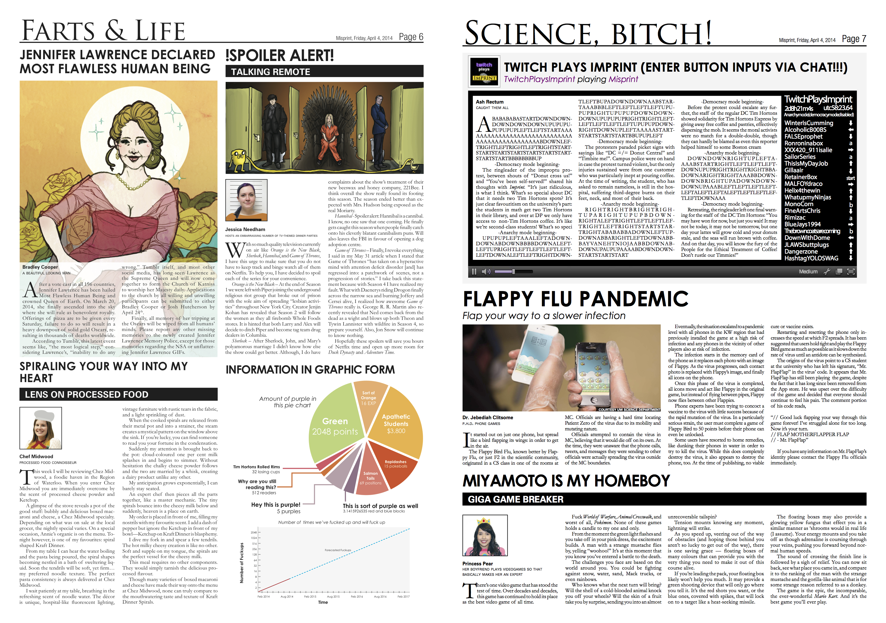
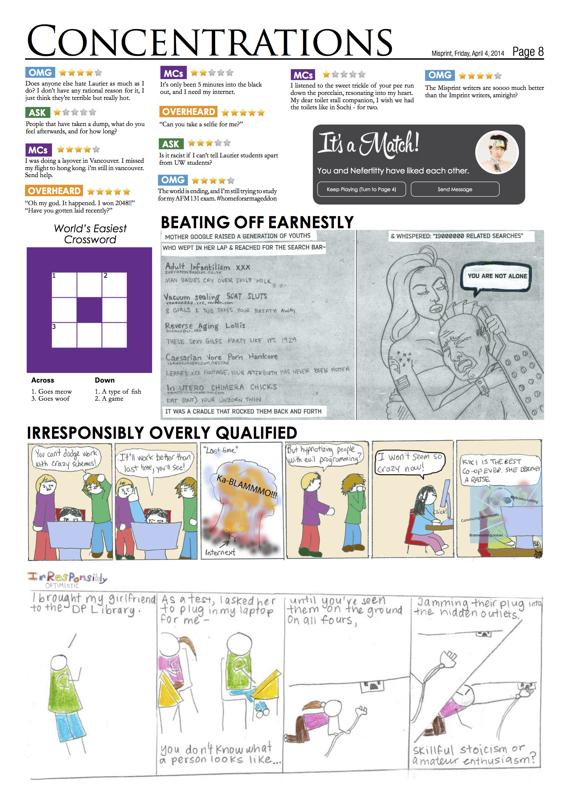
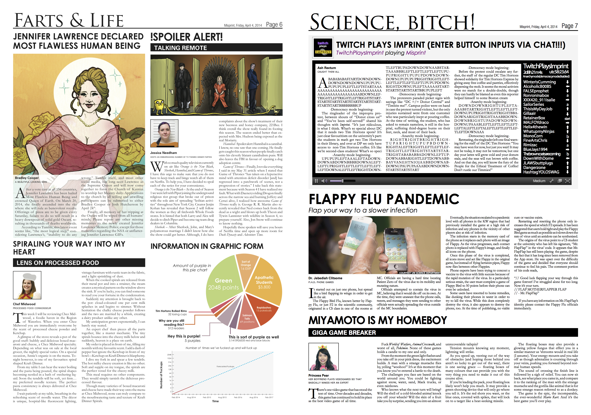
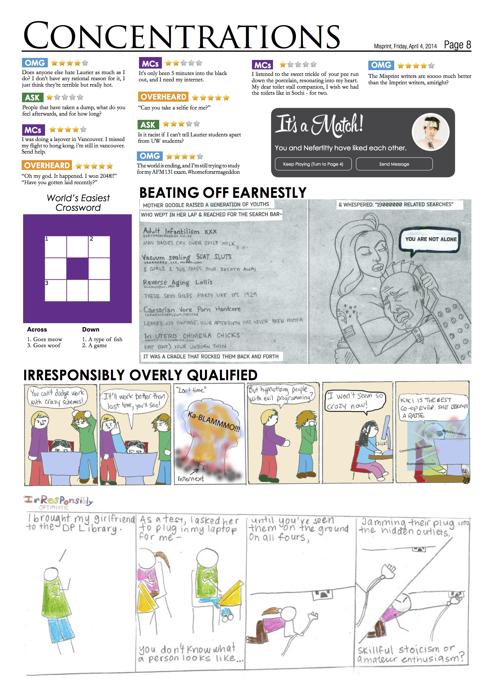

Misprint
Special Mini Edition
Editor-in-Chief
Misprint is a April-fools mini edition of the Imprint newspaper. You can also take a look at the web version here.
I was the editor of the 2014 edition, which meant I was involved in all aspects of the 8 page paper. Initially I recruited writers, photographers, and graphic designers to help create content. For actual production, I personally designed and laid out the paper.

 


